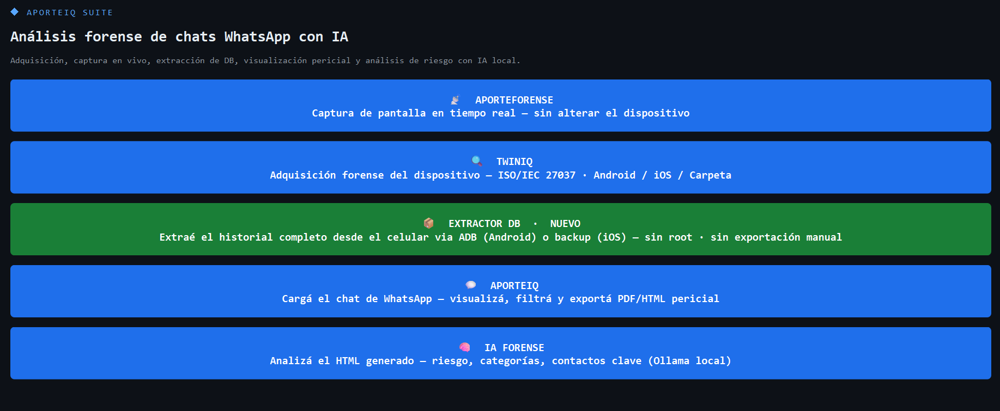

AporteForense Suite adquiere, extrae, visualiza y certifica la cadena de custodia de un chat de WhatsApp en un único flujo guiado — sin conexión a internet, sin depender de que el perito abra la app en el dispositivo.

Cada paso queda registrado con su propio hash de integridad — el reporte final los reúne a todos.
Cada módulo queda sellado con hash SHA-256 de integridad verificable. El PDF consolidado reúne los hashes de todo el caso. Ningún dato sale del equipo del perito.
Respuesta directa por WhatsApp. Sin formularios, sin esperas.
Escribir por WhatsApp